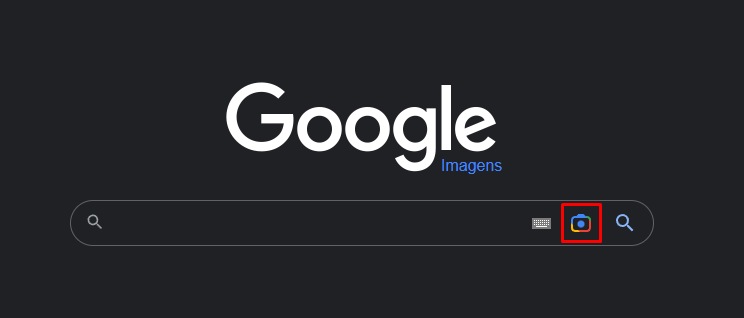

Como verificar se uma informação é falsa ou verdadeira na internet
Antes de começar, aqui esta uma tabela sobre como identificar uma fake news
Algumas formas de você verificar se uma noticia é verdadeira ou falsa.
I. Procure pela fonte e autoria da notícia
Caso você esteja desconfiando de uma informação que recebeu, a primeira coisa a se fazer é: procurar pela fonte e autoria daquela notícia. Se você recebeu aquela notícia de um familiar ou amigo, vale também perguntar: por onde aquela pessoa recebeu aquela informação. Também vale jogar o Titulo da noticia na área de pesquisa do google, para tentar buscar outros portais de noticia falando sobre a informação.
II. Sempre verifique a veracidade dos fatos
Como foi falado anteriormente os fatos precisam ser verificáveis. Então, procurar pelos fatos da informação no Google e verificar se diversas fontes dizem a mesma coisa sobre aquela informação, também é outra maneira de checar se uma notícia é verdadeira. Fazer isso é mais simples do que você imagina. Por exemplo, se você receber uma notícia dizendo que: “Apple anuncia compra da Google, ações disparam no mercado”. Você pode pesquisar pelas palavras chaves e fatos da notícia para verificar se essa informação é verdadeira.
III. Também desconfie de imagens
As imagens também podem ser uma forma de fake news.Mas,existe uma maneira de checar a veracidade da imagemque é no Google imagens
forma de acessar o Google imagens:
